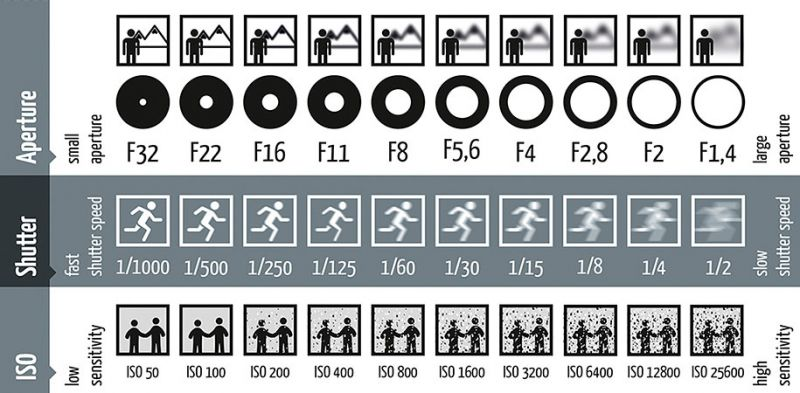
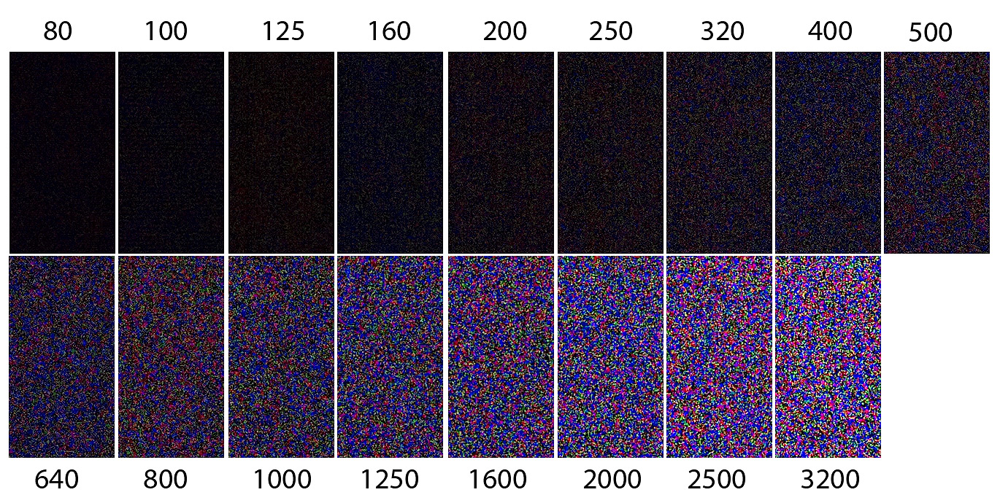
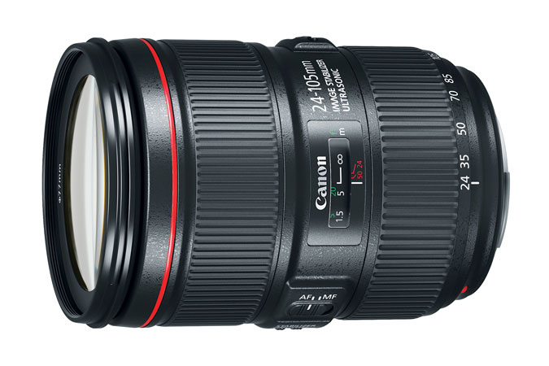

曝光三要素：ISO感光度
ISO感光度為最後一個曝光三要素。 ISO感光度為『感光元件對於光子訊號的敏感程度』 在進光量(光子訊號)固定的情況下，ISO感光度越高，最後成像的曝光結果則會越高。


曝光
ISO值通常以50、100、160、200、400、800、1600、2000、2500、3200、4000、5000、6400等數值表現，越高的ISO值，感光度越高，對光子訊號的敏感程度越高，越適合在低光的環境下使用。

ISO值影響畫面純淨度
在固定的光圈值、快門速度下， 改變ISO值可以直接改變成像曝光。 但越高的ISO值會產生越多的雜訊，會讓成像的『畫面純淨度下降』。
使用ISO的中心思想：高ISO，高雜訊

高ISO值使用時機
ISO值是不用影響到景深（光圈相關）與被攝物件動態（快門相關） 即可改變成像曝光的要素，特別是在使用光圈不夠大的鏡頭於低光環境時特別重要與好用。
